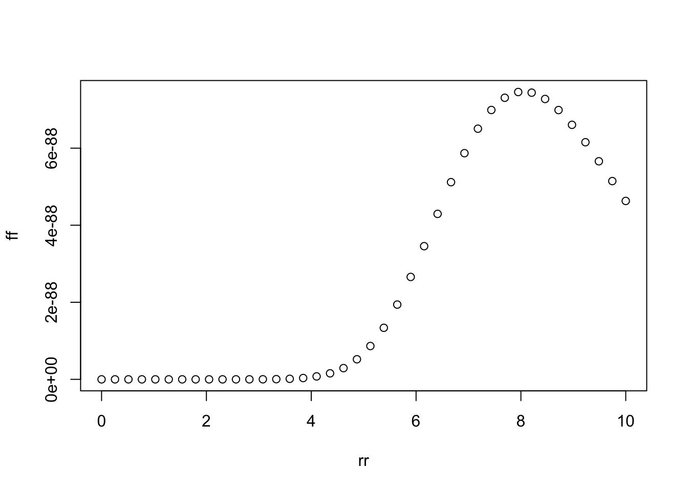
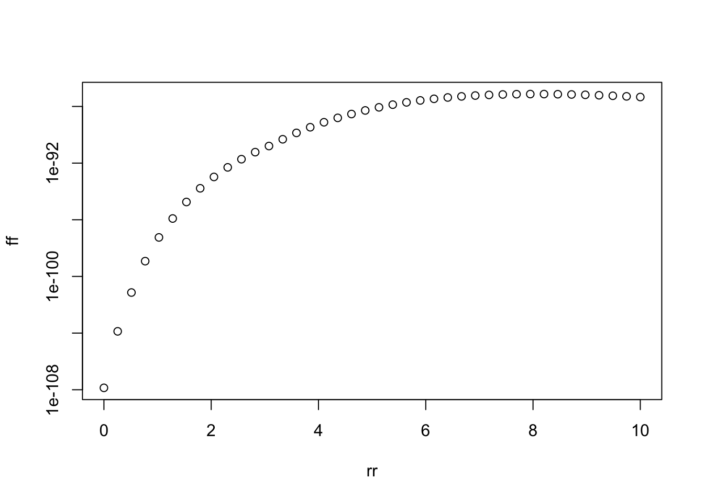
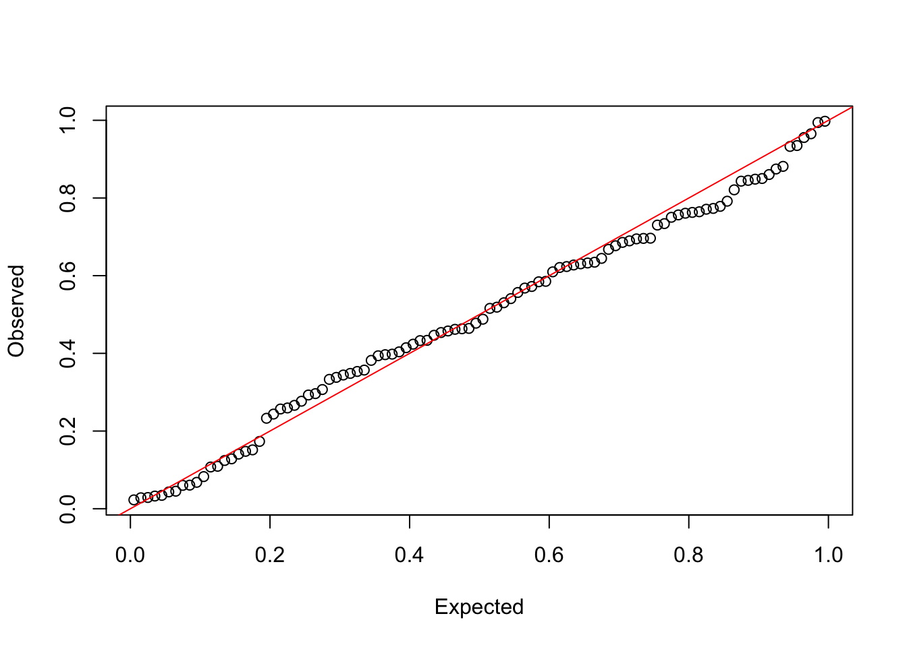
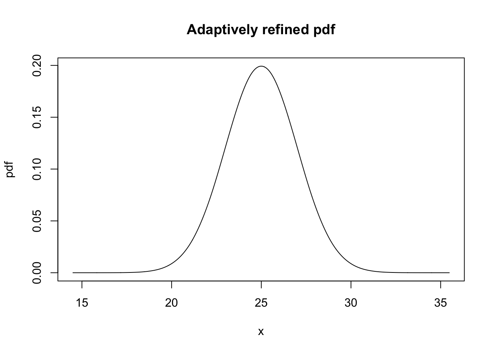
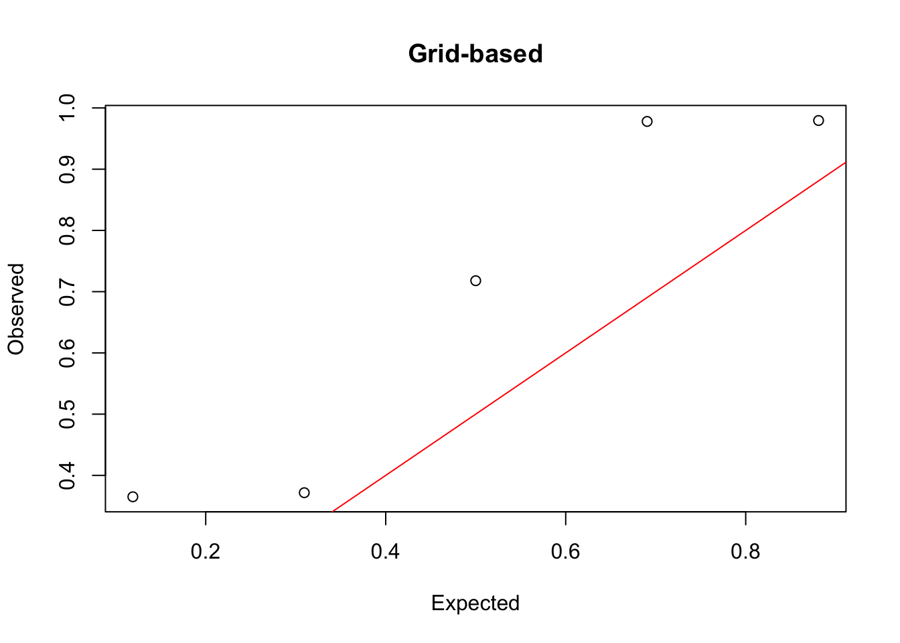

5 Inference
We imagine a model in which in principle, each observation is distributed
\[ X_i\sim N_p(\mu_i,\sigma^2 I_p), \] and we would like to test whether all the points in the union of two sets are equal:
\[ H_0:\mu_i=\mu_{i'} \text{ for all }i,i'\in C_1\cup C_2. \]
When \(C_1\) and \(C_2\) are predetermined sets, a ratio of the between to within variability follows an F-distribution. In our case, we would like to compute p-values along each step of the randomized hierarchical clustering algorithm presented in the previous section. This means that the sets \(C_1\) and \(C_2\) are themselves functions of the data, invalidating the classical F-test. We will still use the same test statistic, but then compute the p-value differently.
5.1 Computing statistics
Our test statistic is defined as the ratio of the between to within cluster sum of squared errors:
\[ R=(|C_1|+|C_2|-2)\cdot\frac{\|b\|^2}{\|w\|^2} \] where \(b,w\in\mathbb R^{n\times p}\) have row \(i\) given by
\[ b_i=\frac{\bar X_{C_1}-\bar X_{C_2}}{1/|C_1|+1/|C_2|}\cdot\begin{cases}1/|C_1|\text{ for }i\in C_1\\ -1/|C_2|\text{ for }i\in C_2\\0\text{ otherwise}\end{cases} \] and \[ w_i=\begin{cases}X_i-\bar X_{C_1}\text{ for }i\in C_1\\ X_i-\bar X_{C_2}\text{ for }i\in C_2\\ 0_p\text{ otherwise} \end{cases}. \] We also note that
\[ \|b\|^2=\frac{\|\bar X_{C_1}-\bar X_{C_2}\|^2}{(1/|C_1|+1/|C_2|)^2}\cdot\left(|C_1|(1/|C_1|)^2+|C_2|(1/|C_2|^2)\right)=\frac{\|\bar X_{C_1}-\bar X_{C_2}\|^2}{1/|C_1|+1/|C_2|} \]
In addition to computing the observed test statistic, we will also compute several “auxiliary statistics,” whose observed values also depend on the matrices \(b\) and \(w\).
In particular, we will later need the matrix-valued function
\[ X(r';\mathcal A_o^{(t)})=\sqrt{\|b\|^2+\|w\|^2}\left(\frac{b}{\|b\|}\cdot g(r')+ \frac{w}{\|w\|}\sqrt{1-g(r')^2}\right) + X - b - w, \]
\[ X(r';\mathcal A_o^{(t)})=\sqrt{1+1/a} \cdot g(r')\cdot b+\sqrt{1+a}\cdot\sqrt{1-g(r')^2}w+(X - b - w), \]
where \(g(r')=\sqrt{r'/(|C_1|+|C_2|-2+r')}\) and \(a=\|b\|^2/\|w\|^2\).
Thus, our function will return \(a, b\), and \(w\) in addition to the test statistic.
Note: We will throw an error if someone attempts to test a merge of two singleton clusters. This is excluded since with \(\sigma\) unknown, this does not seem reasonable.
#' Compute the test and information for auxiliary statistics
#'
#' This computes the test statistic, which is the ratio of the squared Frobenius
#' norms of two matrices `b` and `w` times a scaling factor. This test
#' statistic is F-distributed when `clust1` and `clust2` are predetermined (i.e.
#' not learned on data being used for test). But in our setting, the clusters
#' are learned on the same data. To properly account for this double dipping,
#' we will also need the values of some additional statistics, which depend on
#' `b` and `w`.
#'
#' @param x n-by-p data matrix
#' @param clust1 a vector giving a subset of `1:n`
#' @param clust2 a vector giving a subset of `1:n`
compute_observed_statistics <- function(x, clust1, clust2) {
if ("numeric" %in% class(x)) x <- matrix(x, ncol = 1)
n1 <- length(clust1)
n2 <- length(clust2)
if (n1 == 1 & n2 == 1)
stop("At least one of the tested clusters must be non-singleton")
scaling <- 1/n1 + 1/n2
p <- ncol(x)
xx1 <- scale(x[clust1, , drop = FALSE], center = TRUE, scale = FALSE)
xx2 <- scale(x[clust2, , drop = FALSE], center = TRUE, scale = FALSE)
xbar_diff <- attr(xx1, "scaled:center") - attr(xx2, "scaled:center")
# between <- sum(xbar_diff^2)
# within <- sum(xx1^2) + sum(xx2^2)
# compute w and b as sparse matrices
w <- b <- Matrix::Matrix(0, nrow = nrow(x), ncol = p)
w[clust1, ] <- xx1
w[clust2, ] <- xx2
b[clust1, ] <- 1/n1 * matrix(xbar_diff, nrow = n1, ncol = p, byrow = TRUE)
b[clust2, ] <- -1/n2 * matrix(xbar_diff, nrow = n2, ncol = p, byrow = TRUE)
b <- b / scaling # scaling = || nu ||^2
a <- sum(b^2) / sum(w^2)
ratio <- (n1 + n2 - 2) * a
list(ratio = ratio, b = b, w = w, a = a)
}## ✔ Adding Matrix to 'Imports' field in DESCRIPTION.## ☐ Refer to functions with `Matrix::fun()`.Let’s test that this function works as expected.
testthat::test_that("compute_observed_statistics() works", {
# imagine a one-dim example with three points:
x <- c(-1, 1, 6, 10)
clust1 <- 1:2
clust2 <- 3
# working directly from the formula in the paper:
scaling = 1/2 + 1/1
bcss <- 2 * 1 / 3 * (0-6)^2
wcss <- 1 + 1 + 0
out <- compute_observed_statistics(x, clust1, clust2)
testthat::expect_equal(out$ratio, (3 - 2) * bcss / wcss)
testthat::expect_equal(out$a, sum(out$b^2) / sum(out$w^2))
# and a two-dimensional example with four points:
x <- matrix(c(-1, 1, 6, 6, 10,
0, 0, 2, 2, 10),
ncol = 2)
clust1 <- 1:2
clust2 <- 3:4
scaling = 1/2 + 1/2
# working directly from the formula in the paper:
bcss <- 2 * 2 / 4 * sum(c(6, 2)^2)
wcss <- 1 + 1 + 0 + 0
out <- compute_observed_statistics(x, clust1, clust2)
testthat::expect_equal(out$ratio, (4 - 2) * bcss / wcss)
testthat::expect_equal(out$a, sum(out$b^2) / sum(out$w^2))
})## Test passed with 4 successes 🎊.5.2 Conditionally valid p-value
According to Theorem 1, this involves computing the definite integral
\[ I(r)=\int_0^r \ell_{F}(r')\prod_{s=1}^tp^{(s)}\left(M_o^{(s)};X(r';\mathcal A_o^{(t)})\right)dr', \]
where \(\ell_{F}\) is the density of a \(F_{p,(|C_1|+|C_2|-2)p}\) and \(p^{(s)}\) is the merge probability defined in this section evaluated at \(X(r';\mathcal A_o^{(t)})\), which in the notation of the previous section is
\[ X(r';\mathcal A_o^{(t)})=\sqrt{1+1/a} \cdot g(r')\cdot b+\sqrt{1+a}\cdot\sqrt{1-g(r')^2}w+(X - b - w), \]
To evaluate the integrand, we need to compute the chain of probabilities, from step 1 to \(t\), of each merge that we made on the real data if \(X(r';\mathcal A_o^{(t)})\) had been our data. We will start by writing a function that takes the merge matrix from an hclust object and returns two things:
a list called
clustswith \(n-1\) elements, where the \(i\)-th element of the list represents the clusters that were present before the \(i\)-th merge occurs.a matrix called
mergeswhose \(i\)-th row gives the indices of the two clusters inclusts[[i]]that get merged at step \(i\).
#' Get sequence of clusters and merges from an `hclust` object
#'
#' @param hc an object of class `hclust`
#' @return `clusts` is a list, where `clusts[[i]]` is the clustering before
#' merge i occurs. The first cluster in `clusts[[i]]` is the one that was newly
#' created. `merges` is a matrix whose i-th row gives the indices of the
#' two clusters in `clusts[[i]]` being merged
#' @export
get_hclust_sequence <- function(hc) {
n <- nrow(hc$merge) + 1
clusts <- list()
clusts[[1]] <- as.list(1:n) # initially each leaf is in own cluster
merges <- matrix(NA, n - 1, 2)
cl <- list()
for (i in seq(n - 1)) {
for (j in 1:2) {
if (hc$merge[i, j] < 0)
cl[[j]] <- -hc$merge[i, j]
else
cl[[j]] <- clusts[[hc$merge[i, j] + 1]][[1]] # clust created at merge i
}
merges[i, ] <- match(cl, clusts[[i]])
if (i == n - 1) break # no need to form a single cluster clustering
unaltered_clusters <- clusts[[i]][-merges[i, ]]
new_cluster <- sort(unlist(cl))
clusts[[i+1]] <- c(list(new_cluster), unaltered_clusters)
}
list(clusts = clusts, merges = merges)
}testthat::test_that("get_hclust_sequence() works", {
x <- c(1, 2, 10, 14, 40)
n <- length(x)
hc <- hclust(dist(x))
out <- get_hclust_sequence(hc)
# check that the clustering at each step is a partition of 1:n:
for (i in seq(n-1)) testthat::expect_equal(sort(unlist(out$clusts[[i]])), 1:n)
# check that the newly formed clusters are as expected:
testthat::expect_equal(out$clusts[[2]][[1]], 1:2)
testthat::expect_equal(out$clusts[[3]][[1]], c(3, 4))
testthat::expect_equal(out$clusts[[4]][[1]], 1:4)
# check that the clusters merged correctly form the new clusters:
for (i in seq(n - 2)) {
clust1 <- out$clusts[[i]][[out$merges[i, 1]]]
clust2 <- out$clusts[[i]][[out$merges[i, 2]]]
testthat::expect_equal(out$clusts[[i + 1]][[1]], sort(c(clust1, clust2)))
}
})## Test passed with 10 successes 🎊.5.2.1 Forming integrand
We are now ready to write a function that will return the \(t\) merge probabilities that get multiplied together in the integrand.
#' Compute selection probabilities on a new data set
#'
#' These probabilites are used in the integrand of the p-value calculation.
#'
#' @param x_new observed data matrix
#' @param hc_sequence output of `get_hclust_sequence()` applied to output of
#' `hclust_randomized()`
#' @param dist_func the function that was used to compute the original n by n matrix
#' @param linkage_func the linkage used to measure the dissimilarity
#' between pairs of clusters
#' @param tau
compute_selected_probs <- function(x_new, hc_sequence, dist_func, linkage_func, tau) {
num_steps <- length(hc_sequence$clusts) # different from nrow(x_new) - 1 if truncated in integrand
probs_selected <- rep(NA, num_steps)
# this part is much like `hclust_randomized()` in how it updates d_clusts
# and computes probabilities, but it is different in that it goes with the
# predetermined sequence of merges
d <- as.matrix(dist_func(x_new))
d_clusts <- d
for (i in seq(num_steps)) {
# calculate probabilities
probs <- get_merge_probs(d_clusts, tau)
# get the chosen two clusters from the current clustering
c1 <- hc_sequence$merges[i, 1]
c2 <- hc_sequence$merges[i, 2]
# record probability for chosen pair
probs_selected[i] <- probs[c1, c2] + probs[c2, c1] # matrix is lower tri
if (i == num_steps) break
# update dissimilarities
d_clusts <- d_clusts[-c(c1, c2), -c(c1, c2), drop = FALSE]
num_clusts <- length(hc_sequence$clusts[[i]])
d_new <- c()
for (j in seq(num_clusts)[-c(c1, c2)]) {
d_new <- c(d_new, linkage_func(
hc_sequence$clusts[[i + 1]][[1]], # newly created cluster
hc_sequence$clusts[[i]][[j]], # remaining clusters
d
))
}
# recall that new cluster will be first, i.e. clusts[[i+1]][[1]]:
d_clusts <- rbind(d_new, d_clusts)
d_clusts <- cbind(c(0, d_new), d_clusts)
}
return(probs_selected)
}Let’s make some tests based on the previous example:
testthat::test_that("get_hclust_sequence() works", {
x <- matrix(c(1, 2, 10, 14, 40), ncol = 1)
n <- length(x)
hc <- hclust(dist(x))
out <- get_hclust_sequence(hc)
# when tau = 0 and original x is used all probs should be 1 when there are
# no tied distances:
testthat::expect_equal(
compute_selected_probs(x, out, dist, linkage_complete, tau = 0),
rep(1, n-1))
# when tau = 0 and there are two tied distances:
x_new <- matrix(c(1, 2, 3, 14, 40), ncol = 1)
testthat::expect_equal(
compute_selected_probs(x_new, out, dist, linkage_complete, tau = 0),
c(0.5, 0, 1, 1))
# when tau = 0 and there are three tied distances:
x_new <- matrix(c(1, 2, 3, 4, 40), ncol = 1)
testthat::expect_equal(
compute_selected_probs(x_new, out, dist, linkage_complete, tau = 0),
c(1 / 3, # merging 1-2 is as good as 2-3 or 3-4
1, # merging 3-4: better than {1,2}-3 and {1,2}-4 for complete linkage
1, # merging {1,2}-{3,4} is best
1))
})## Test passed with 3 successes 🥳.Recall that the integrand is given by
\[ \ell_{F}(r')\prod_{s=1}^tp^{(s)}\left(M_o^{(s)};X(r';\mathcal A_o^{(t)})\right). \]
It remains to multiply the \(F_{p,(|C_1|+|C_2|-2)p}\) density by the \(t\) probabilities.
#' Integrand in p-value calculation
#'
#' Creates a perturbed new data matrix based on the observed data and a
#' perturbation of size r. Then `hc$merge` to reconstruct the possible merges at
#' each step s from 1 to t. Then, computes the probability of this sequence of
#' merges being chosen for on this perturbed data set.
#'
#' @param r scalar value at which we evaluate the integrand
#' @param t which step p-value is being calculated at
#' @param x observed data matrix
#' @param hc_sequence output of `get_hclust_sequence()` applied to output of
#' `hclust_randomized()`
#' @param obs_statistics output of `compute_observed_statistics()`
#' @param dist_func the function that was used to compute the original n by n matrix
#' @param linkage_func the linkage used to measure the dissimilarity
#' between pairs of clusters
#' @param tau
integrand <- function(r, t, x, hc_sequence, obs_statistics, dist_func,
linkage_func, tau) {
p <- ncol(x)
# truncate sequence to step t:
hc_sequence$clusts <- hc_sequence$clusts[1:t]
hc_sequence$merges <- hc_sequence$merges[1:t, , drop = FALSE]
# get the cluster sizes for the two clusters being tested:
n1 <- length(hc_sequence$clusts[[t]][[hc_sequence$merges[t, 1]]])
n2 <- length(hc_sequence$clusts[[t]][[hc_sequence$merges[t, 2]]])
scaling = 1/n1+1/n2
fr <- sqrt(r / (n1 + n2 - 2 + r))
x_new <- with(obs_statistics, # all variables other than fr come from list
sqrt(1+1/a) * fr * b + sqrt((1+a) * (1-fr^2)) * w + (x - b - w))
probs <- compute_selected_probs(x_new, hc_sequence, dist_func, linkage_func, tau)
return(df(r, df1 = p, df2 = p * (n1 + n2 - 2)) * prod(probs))
}Let’s make a plot of the integrand:
x <- ex1$x
x <- matrix(c(1, 2, 10, 14, 40), ncol = 1)
set.seed(123)
hc <- hclust_randomized(dist(x), tau = 0.2)
hc_sequence <- get_hclust_sequence(hc)
tt <- 3 # last merge, when only two clusters remain
cl <- hc_sequence$clusts[[tt]]
obs_stat <- compute_observed_statistics(x, cl[[1]], cl[[2]])
f <- function(r) integrand(r=r, t=tt, x=x, hc_sequence=hc_sequence,
obs_statistics=obs_stat,
dist_func = dist,
linkage_func = hc$linkage_func, tau = hc$tau)
rr <- seq(0, 10, length=40)
ff <- sapply(rr, f)
plot(rr,ff)
plot(rr,ff, log = "y")

We observe that it is monotonically increasing.
5.2.2 Computing p-value
We are now ready to compute the integral \(I(r)\), given at the top of the section. By Corollary 1 of the paper, our selective p-value is given by
\[ 1 - \frac{I(r)}{I(\infty)}. \]
#' Compute selective p-value
#'
#' Arguments `hc_sequence` and `obs_statistics` if `NULL` are computed from `hc`
#' and `t`.
#'
#' @param t which step p-value is being calculated at
#' @param x observed data matrix
#' @param hc output of `hclust_randomized()`
#' @param hc_sequence output of `get_hclust_sequence()` applied to output of
#' `hclust_randomized()`
#' @param obs_statistics output of `compute_observed_statistics()`
#' @param dist_func the function that was used to compute the original n by n matrix
#'
#' @export
compute_pvalue <- function(t, x, hc, hc_sequence = NULL, obs_statistics = NULL, dist_func) {
stopifnot("hclust_randomized" %in% class(hc))
if (is.null(hc_sequence)) hc_sequence <- get_hclust_sequence(hc)
if (is.null(obs_statistics)) {
# at step t, these are the two clusters that get merged:
clust1 <- hc_sequence$clusts[[t]][[hc_sequence$merges[t, 1]]]
clust2 <- hc_sequence$clusts[[t]][[hc_sequence$merges[t, 2]]]
obs_statistics <- compute_observed_statistics(x, clust1, clust2)
}
integrand_func <- Vectorize(function(r) {
integrand(r=r,
t=t,
x=x,
hc_sequence=hc_sequence,
obs_statistics=obs_statistics,
dist_func = dist_func,
linkage_func = hc$linkage_func,
tau = hc$tau)
})
# rather than 1 - I(r)/I(infty), let's try 1 / [1 + I(r) / I(r to inf)]
numerator <- stats::integrate(integrand_func, 0, obs_statistics$ratio)
extra <- stats::integrate(integrand_func, obs_statistics$ratio, Inf)
return(1 - 1 / (1 + extra$value / numerator$value))
}Let’s try this out on our example.
x <- ex1$x
set.seed(123)
hc <- hclust_randomized(dist(x), tau = 0.2)
tt <- 50
pval <- compute_pvalue(tt, x, hc, dist_func = dist)Let’s see if the p-values have a uniform distribution under the global null:
set.seed(123)
n <- 60
p <- 2
tt <- 59 # test when there are only two clusters
tau <- 0.05
nsim <- 100
pvals <- rep(NA, nsim)
for (i in seq(nsim)) {
x <- matrix(rnorm(n * p), n, p)
hc <- hclust_randomized(dist(x), tau = tau)
pvals[i] <- compute_pvalue(tt, x, hc, dist_func = dist)
}## [1] 0.39382794 0.25939513 0.08270233 0.34422836 0.64448590 0.51890275
## [7] 0.38193977 0.69469529 0.03261356 0.47765399 0.46419695 0.75642113
## [13] 0.03442730 0.85009688 0.67707884 0.76071589 0.35691821 0.57213562
## [19] 0.14065351 0.76283204 0.77103210 0.63263913 0.45362139 0.99421999
## [25] 0.29280314 0.40388144 0.95569824 0.53022302 0.12418868 0.69641084
## [31] 0.14772701 0.63047034 0.96528759 0.17328262 0.02280646 0.33818281
## [37] 0.84330809 0.56804964 0.33307875 0.04326422 0.58533066 0.10928114
## [43] 0.66780395 0.44650507 0.02891848 0.73022281 0.77309230 0.41449270
## [49] 0.62104016 0.82100219 0.46325246 0.73400636 0.68956889 0.25673281
## [55] 0.02821479 0.99752796 0.84531666 0.30684224 0.75026227 0.42364188
## [61] 0.84840070 0.68565250 0.62747914 0.76449916 0.27676628 0.10743660
## [67] 0.86036372 0.06006168 0.06796546 0.77842737 0.39659104 0.62346801
## [73] 0.93268091 0.51581847 0.54091094 0.87459353 0.63465572 0.39796810
## [79] 0.60982208 0.43286264 0.26609889 0.35336933 0.12841352 0.46184453
## [85] 0.34841172 0.88139217 0.69588672 0.15150223 0.24364091 0.58423666
## [91] 0.43351787 0.79173028 0.93499444 0.29633877 0.04514058 0.23288987
## [97] 0.48789485 0.55670260 0.45760527 0.06074038qqplot(
(ppoints(length(pvals))),
(sort(pvals)),
xlab = "Expected",
ylab = "Observed"
)
abline(0, 1, col = "red")
Looks good.
5.2.2.1 An alternative grid-based approach
Let’s try out the adaptive grid-based summation approach that is used in the Python implementation:
Suppose we have a pdf \(f\) that we want to integrate, but we don’t know where its support is concentrated and its costly to evaluate. Our approach is the following:
- compute \(f\) along a wide coarse grid.
- interpolate \(f\) along a finer version of this wide grid
- evaluate cdf of interpolated version of \(f\) to get 0.005 and 0.995 quantiles
- get a narrower grid based on this (going 3x wider than the quantiles)
- on the narrower grid, evaluate on a coarse grid
- now, interpolate using this narrow coarse grid on a narrow fine grid to get p-value
#' Adaptive grid integration for pdf evaluation
#'
#' Performs two-pass adaptive grid refinement to efficiently evaluate a
#' probability density function. First identifies the main part of support on a
#' wide grid, then refines evaluation on a narrower grid focused on the
#' high-density region.
#'
#' @param f A function that takes a single numeric input and returns the
#' (possibly unnormalized) probability density at that point.
#' @param observed_target Numeric. The observed value of the test statistic
#' for which to compute a p-value.
#' @param wide_grid_min Numeric. The minimum value of the initial wide grid.
#' @param wide_grid_max Numeric. The maximum value of the initial wide grid.
#' @param num_coarse Integer. The number of points to use in the coarse grids
#' for both passes.
#' @param num_fine Integer. The number of points to use in the fine grid for
#' the first pass. The second pass uses \code{num_fine * 2} points.
#' @param qlow Numeric. The lower quantile for defining the narrower interval
#' (default: 0.005).
#' @param qhigh Numeric. The upper quantile for defining the narrower interval
#' (default: 0.995).
#' @param buffer Numeric. Factor by which to expand the narrower interval width
#' on each side. The final grid spans from `q_low - buffer * width` to
#' `q_high + buffer * width`.
adaptive_integrate <- function(f, observed_target, wide_grid_min, wide_grid_max,
num_coarse, num_fine,
qlow = 0.005, qhigh = 0.995, buffer = 3) {
# Pass 1: Wide grid
wide_fine_grid <- seq(wide_grid_min, wide_grid_max, length.out = num_fine)
# Evaluate f on fine grid
f_fine <- sapply(wide_fine_grid, f)
f_fine <- pmax(0, f_fine)
# Normalize pdf using trapezoidal rule
dx <- diff(wide_fine_grid)
total_mass <- sum((f_fine[-1] + f_fine[-length(f_fine)]) / 2 * dx)
f_fine_norm <- f_fine / total_mass
# Compute CDF using trapezoidal rule
cdf <- c(0, cumsum((f_fine_norm[-1] + f_fine_norm[-length(f_fine_norm)]) / 2 * dx))
# Remove duplicates for interpolation
unique_idx <- !duplicated(cdf)
cdf_unique <- cdf[unique_idx]
grid_unique <- wide_fine_grid[unique_idx]
# Find narrower interval
low <- approx(cdf_unique, grid_unique, xout = qlow, rule = 2)$y
high <- approx(cdf_unique, grid_unique, xout = qhigh, rule = 2)$y
width <- high - low
low <- max(wide_grid_min, low - buffer * width)
high <- min(wide_grid_max, high + buffer * width)
cat("Narrow grid bounds:", low, high, "\n")
# Pass 2: Narrow coarse grid
narrow_coarse_grid <- seq(low, high, length.out = num_coarse)
# Evaluate f on narrow coarse grid
f_narrow_coarse <- sapply(narrow_coarse_grid, f)
# Interpolate to narrow fine grid
narrow_fine_grid <- seq(low, high, length.out = num_fine * 2)
interp_func_narrow <- splinefun(narrow_coarse_grid, f_narrow_coarse, method = "natural")
f_narrow_fine <- pmax(0, interp_func_narrow(narrow_fine_grid))
# Compute p-value
# Normalize the posterior
posterior <- f_narrow_fine
#posterior <- posterior/max(posterior)
posterior_sum <- sum(posterior)
if (posterior_sum == 0 || is.nan(posterior_sum)) {
# Fallback: use uniform distribution to avoid NaN
posterior <- rep(1 / length(posterior), length(posterior))
posterior_sum <- sum(posterior)
} else {
posterior <- posterior / posterior_sum
}
# Calculate p-value: P(statistic >= observed_target)
p_value <- sum(posterior[narrow_fine_grid >= observed_target])
# Return results
return(list(
p_value = p_value,
grid = narrow_fine_grid,
pdf = f_narrow_fine,
narrow_bounds = c(low, high)
))
}f <- function(x) dnorm(x, mean = 25, sd = 2)
prob <- 0.95
result <- adaptive_integrate(
observed_target = qnorm(prob, mean = 25, sd = 2),
f = f,
wide_grid_min = 0,
wide_grid_max = 700,
num_coarse = 20,
num_fine = 1000,
buffer = 0.5 # needed a narrower buffer for this to work
)
# Plot the result
plot(result$grid, result$pdf, type = "l",
xlab = "x", ylab = "pdf",
main = "Adaptively refined pdf")
result$p_value - (1-prob) # pretty close!## Narrow grid bounds: 14.4982 35.48216
## [1] 0.0001789602#' Compute selective p-value
compute_pvalue_grid <- function(t, x, hc, hc_sequence = NULL, obs_statistics = NULL, dist_func) {
stopifnot("hclust_randomized" %in% class(hc))
if (is.null(hc_sequence)) hc_sequence <- get_hclust_sequence(hc)
if (is.null(obs_statistics)) {
# at step t, these are the two clusters that get merged:
clust1 <- hc_sequence$clusts[[t]][[hc_sequence$merges[t, 1]]]
clust2 <- hc_sequence$clusts[[t]][[hc_sequence$merges[t, 2]]]
obs_statistics <- compute_observed_statistics(x, clust1, clust2)
}
integrand_func <- Vectorize(function(r) {
integrand(r=r,
t=t,
x=x,
hc_sequence=hc_sequence,
obs_statistics=obs_statistics,
dist_func = dist,
linkage_func = hc$linkage_func,
tau = hc$tau)
})
results <- adaptive_integrate(
observed_target = obs_statistics$ratio,
f = integrand_func,
wide_grid_min = 0.00001,
wide_grid_max = 180,
num_coarse = 200, # making this larger improves approximation, but at cost to time
num_fine = 2000,
buffer = 3
)
return(results$p_value)
}Let’s see if the p-values have a uniform distribution under the global null:
n <- 30
p <- 2
tt <- 29 # test when there are only two clusters
tau <- 0.05
nsim <- 5
# run compute_pvalue()
set.seed(123)
pvals <- rep(NA, nsim)
time1 <- system.time({
for (i in seq(nsim)) {
x <- matrix(rnorm(n * p), n, p)
hc <- hclust_randomized(dist(x), tau = tau)
pvals[i] <- compute_pvalue(tt, x, hc, dist_func = dist)
}
})
# run compute_pvalue_grid() on identical data sets
set.seed(123)
pvals2 <- rep(NA, nsim)
time2 <- system.time({
for (i in seq(nsim)) {
x <- matrix(rnorm(n * p), n, p)
hc <- hclust_randomized(dist(x), tau = tau)
pvals2[i] <- compute_pvalue_grid(tt, x, hc, dist_func = dist)
}
})
pvals2## Narrow grid bounds: 1e-05 78.94614
## Narrow grid bounds: 1e-05 49.40909
## Narrow grid bounds: 1e-05 38.16707
## Narrow grid bounds: 1e-05 86.30044
## Narrow grid bounds: 1e-05 82.97366## [1] 0.3650682 0.9794856 0.3717252 0.7178878 0.9779490qqplot(
(ppoints(length(pvals2))),
(sort(pvals2)),
xlab = "Expected",
ylab = "Observed",
main = "Grid-based"
)
abline(0, 1, col = "red")
In principle, this should be identical to the p-values we got with the other approach. Let’s check how close they are:
## [1] -0.0012242523 0.0007524335## user system elapsed
## 0.792 0.015 0.807## user system elapsed
## 25.932 0.420 26.362This shows that we can get nearly the identical p-values, but that the grid-based approach may be substantially slower. Note: We can speed up the grid-based approach by taking num_coarse to be smaller; however, then the approximation suffers.
For this reason, we will (for now) export compute_pvalue() and not the grid-based approach.